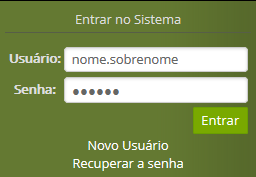

Síndrome do Túnel do Carpo: Avaliação e Intervenção Fisioterapêutica com Interface entre a Mão e a Coluna Vertebral
Amanda Santos Simão
201811036
MESTRADO EM FISIOTERAPIA
Não
Aprovado
388
04/02/2020
Terça-Feira
Defesa
Robô explorador térmico de ambientes utilizando rede neural e algoritmo Bug
WILLIAN BAUNIER DE MELO
201811558
MESTRADO PROFISSIONAL EM INOVAÇÃO TECNOLÓGICA
Não
Aprovado
398
28/01/2020
Terça-Feira
Defesa
Análise do comportamento mecânico e biológico do bambu gigante (Dendrocalamus asper) tratado com cobre e boro
Hugo Rocha Scharfenberg
201811545
MESTRADO PROFISSIONAL EM INOVAÇÃO TECNOLÓGICA
Não
Aprovado
358
20/01/2020
Segunda-feira
Defesa
Desenvolvimento e avaliação da eficácia das vacinas de células dendríticas e células NK em modelos experimentais induzidos ao câncer de mama com células 4T1
Eduardo Arthur Rodovalho Alves
201611522
DOUTORADO EM CIÊNCIAS DA SAÚDE
Não
Aprovado
378
18/12/2019
Quarta-Feira
Defesa
Possibilidades de aplicação do Gamification para Serviços de Referência (SR) de Bibliotecas Universitárias
AMANDA FRANZAO RODRIGUES DA SILVA
201811505
MESTRADO PROFISSIONAL EM INOVAÇÃO TECNOLÓGICA
Não
Aprovado
382
16/12/2019
Segunda-feira
Defesa
Redes Industriais Utilizando Módulos Xbee e Comunicação com Dispositivos Móveis
Gustavo Oliveira Martins
201811503
MESTRADO PROFISSIONAL EM INOVAÇÃO TECNOLÓGICA
Não
Aprovado
359
13/12/2019
Sexta-Feira
Defesa
Avaliação morfológica e funcional em podócitos de pacientes com Podocitopatias
CRISLAINE APARECIDA DA SILVA
201611523
DOUTORADO EM CIÊNCIAS DA SAÚDE
Não
Aprovado
307
13/12/2019
Sexta-Feira
Defesa
AVALIAÇÃO DE CITOCINAS E QUIMIOCINAS EM PACIENTES DIABÉTICOS COM E SEM ALTERAÇÃO RENAL
LILIANE SILVANO ARAUJO
201611516
DOUTORADO EM CIÊNCIAS DA SAÚDE
Não
Aprovado
327
12/12/2019
Quinta-Feira
Defesa
Influência dos aspectos psicossociais na mobilidade de idosos da comunidade.
Mariana Thays Carvalho
201810154
MESTRADO EM FISIOTERAPIA
Não
Aprovado
310
12/12/2019
Quinta-Feira
Defesa
ASSOCIAÇÃO CLÍNICO-MORFOLÓGICA NA NEFROPATIA POR IGA PRIMÁRIA: PREDIÇÃO DE PARÂMETROS MORFOLÓGICOS A PARTIR DE DADOS CLÍNICOS, AVALIAÇÃO DO PAPEL DOS SUBTIPOS DE GLOMERULOESCLEROSE SEGMENTAR E DAS ALTERAÇÕES ULTRAESTRUTURAIS PODOCITÁRIAS
Maria Luíza Gonçalves dos Reis Monteiro
201611515
DOUTORADO EM CIÊNCIAS DA SAÚDE
Não
Aprovado
403
11/12/2019
Quarta-Feira
Defesa
“Estudo das vias de sinalização e resposta ao dano oxidativo de DNA em Leishmania major”.
Raíssa Bernardes da Silva
201520620
DOUTORADO EM MEDICINA TROPICAL E INFECTOLOGIA
Não
Aprovado
322
09/12/2019
Segunda-feira
Defesa
Análise de variáveis existentes na usinagem de blocos de Zircônia estabilizada com 3% de Ítria e a possível reutilização do cavaco produzido
RAPHAEL SILVA LINS
201811554
MESTRADO PROFISSIONAL EM INOVAÇÃO TECNOLÓGICA
Não
Aprovado
369
09/12/2019
Segunda-feira
Defesa
Efeito da Cavitação Hidrodinâmica na purificação de águga contaminada com oocistos de Crypstosporidium parvum
Carlos Eduardo Borges Oliveira
201720704
MESTRADO EM CIÊNCIA E TECNOLOGIA AMBIENTAL
Não
Aprovado
376
28/11/2019
Quinta-Feira
Defesa
Avaliação do desempenho das lagartas Spodoptera frugiperda após contaminação por bactérias e leveduras
Sarah Lúcia Pantaleão Pereira
201720708
MESTRADO EM CIÊNCIA E TECNOLOGIA AMBIENTAL
Não
Aprovado
371
25/11/2019
Segunda-feira
Defesa
Avaliação do comportamento do efluente líquido da indústria de fertilizante foliar por biopolímero M22
Fernanda Rezende Terra
201720725
MESTRADO EM CIÊNCIA E TECNOLOGIA AMBIENTAL
Não
Aprovado
332
22/11/2019
Sexta-Feira
Defesa
Uma proposta de sequência didática para a abordagem do tema metais no ensino médio
Sérgio de Oliveira Freitas
201720319
MESTRADO PROFISSIONAL EM QUÍMICA EM REDE NACIONAL
Não
Aprovado
326
19/11/2019
Terça-Feira
Defesa
Ensinando hidrólise salina por meio de blog na perspectiva do ensino híbrido
Claudinei Osorio de Oliveira
201720321
MESTRADO PROFISSIONAL EM QUÍMICA EM REDE NACIONAL
Não
Aprovado
317
14/11/2019
Quinta-Feira
Qualificação
Avaliação morfológica e funcional em podócitos de pacientes com Podocitopatias
CRISLAINE APARECIDA DA SILVA
201611523
DOUTORADO EM CIÊNCIAS DA SAÚDE
Não
Aprovado
311
13/11/2019
Quarta-Feira
Defesa
"Enterococcus ssp. DE ORIGEM CLÍNICA E AMBIENTAL: PERFIL DE SENSIBILIDADE AOS ANTIMICROBIANOS, FATORES DE VIRULÊNCIA E CARACTERIZAÇÃO MOLECULAR"
Fábio Ederson Lopes Correa
201511225
DOUTORADO EM CIÊNCIAS DA SAÚDE
Não
Aprovado
380
12/11/2019
Terça-Feira
Defesa
Vídeos Introdutórios sobre “Redação de Pedidos de Patentes"
A partir do dia 8 de setembro a UFTM passará a utilizar o G Suite for Education, da Google em seu serviço de e-mail.
As contas de usuário e senhas de todos os Sistemas UFTM (UFTMNet, SEI, SISCAD, eduroam e Moodle)
serão as mesmas do e-mail institucional.
Fig.2 - Autenticação no Gmail.

Fig.3 - Autenticação no UFTMNet.
Por exemplo, um usuário cujo email institucional seja nome.sobrenome@uftm.edu.br
realizará a autenticação no Sistema Integrado através do usuário nome.sobrenome.
Em caso de dúvidas utilize a opção de
Recuperar a senha para obter novamente o nome de usuário e poder criar uma nova senha.
O sistema UFTMNet foi desenvolvido para a resolução 1366 x 768 ou superior.
Ao acessar o sistema através de dispositivos móveis, tais como, smartphones ou tablets, podem ocorrer problemas inesperados durante a sua utilização.
É aconselhável acessar o sistema através de computadores de mesa ou notebooks.